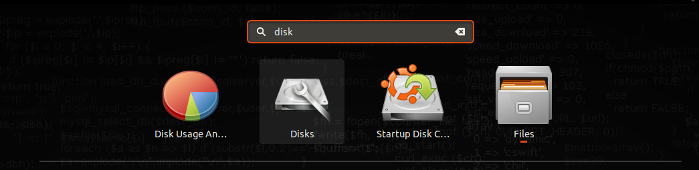
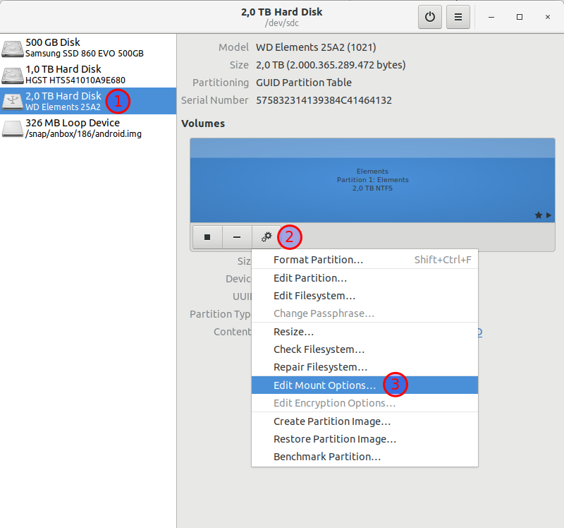
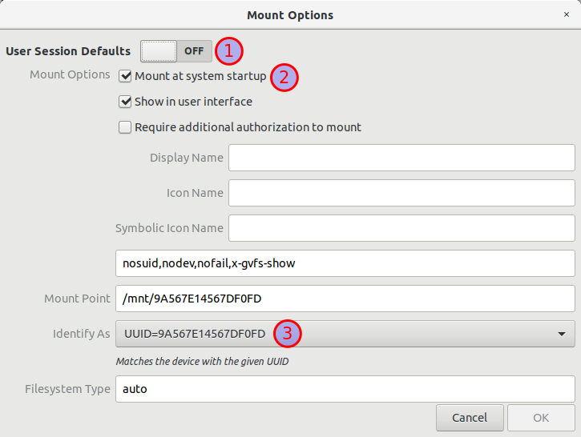

Volumenes de Docker y Discos USB Externos
Estoy levantando un media server en mi maquina, y aprovecho que hay mucho despliegue usando contenedores Docker.
El Problema
Como tengo todo mi contenido multimedia en un disco USB externo, aproveche y le vincule los volumenes al contenedor directamente a los paths del disco.
Entonces, los volumenes quedaban mas o menos como sigue. Uso la notación que pone Ubuntu al montar los discos externos:
/media/tomas/Elements/series:/series
/media/tomas/Elements/peliculas:/peliculas
....
De lado derecho es el path del directorio en el host. Del lado izquierdo es el directorio dentro del contenedor.
Como esto se hace en un equipo particular, eventualmente se reinicia (o se apaga y prende). Esto me genero 1 gran problema.
El servicio de Docker inicia durante el proceso de boot del equipo. Sin embargo, Ubuntu monta el disco al momento en el que el usuario inicia sesión.
Esto genera que Docker intente buscar los directorios de los volumenes en el Host, y al no encontrarlos, los crea. Este comportamiento se conoce como propagación y esta documentado1.
Sin embargo, sucedia que al iniciar sesión, Ubuntu intentaba montar en el directorio /media/tomas/Elements, pero debido a que este ya existia (dado que Docker lo creaba por el mecanismo de propagación), Ubuntu monta el disco en /media/tomas/Elements1.
El efecto de esto es que perdia acceso a los directorios dentro del contenedor.
La idea de solución
Buscando ayuda, lo que me sugieren y que es la solución es cambiar el orden del booteo, para que Docker inicie despues del proceso de mount. Esto no es tan facil como puede parecer. Requiere:
- Buscar la unit del servicio de mount
- Buscar la unit de systemd del servicio de Docker
- Agregar el servicio de mount como dependencia de Docker
- Hacer que el mount del disco se haga al inicio y no al iniciar sesion
- Probarlo
A esa secuencia de pasos llegue luego de un poco de prueba y error.
A continuación documentaré los pasos que tuve que hacer
La solución
Aclaración del setup de mi equipo: Tengo una notebook corriendo Ubuntu 18.04, que ejecuta Systemd para gestionar el proceso de arranque del Sistema Operativo. Desconozco si en otras distros esto puede variar.
Nombre del servicio de mount en Systemd
Despues de buscar un rato, descubrí que el servicio que maneja el mount al inicio del sistema se llama udisks2.service. Una forma de ver los servicios en systemd es:
systemctl --type=service
Agregar dependencia de este servicio al inicio de Docker
En este paso, necesitamos que docker no arranque hasta que se termine el proceso udisks2.service.
En mi caso, la configuración de Systemd de Docker esta en /lib/systemd/system/docker.service (que tiene ademas un link simbolico en /etc/systemd/system/multi-user.target.wants/docker.service).
Alli dentro, busque la linea que contiene lo siguiente
After=network-online.target firewalld.service containerd.service
Y agregue al final de la misma (con separación de un espacio)
After=network-online.target firewalld.service containerd.service udisks2.service
Luego guarde y cerre el archivo.
Para que systemd tome este cambio, tuve que ejecutar:
sudo systemctl daemon-reload
Montar el disco al inicio del sistema y no de la sesión
A continuación, tuve que configurar para que el disco se monte al inicio del sistema. Para ello, voy tomar el camino de hacerlo via interfaz gráfica y no por consola.
Para ello, usé una app que se busca en Gnome como Disks:

Una vez allí, elegimos el disco en cuestion y entramos a sus "opciones de montaje":

En esta nueva pantalla, se indicaron las siguientes cosas:
- Que no se use las configuraciones por defecto para la sesión
- Que se monte al arranque del sistema
- Que se identifique con el UUID (Esta ultima es optativa, pero era la que me pareció que dejaba el nombre mas apropiado al directorio donde se iba a montar)

Cambiar los paths en los volumenes
Una vez terminado esto, pude cambiar los paths de los volumenes del lado del host, dejandolos como sigue:
/mnt/9A567...0FD/series:/series
/mnt/9A567...0FD/peliculas:/peliculas
....
Probé reiniciar y todo funciono perfecto.

Comentarios
Comments powered by Disqus